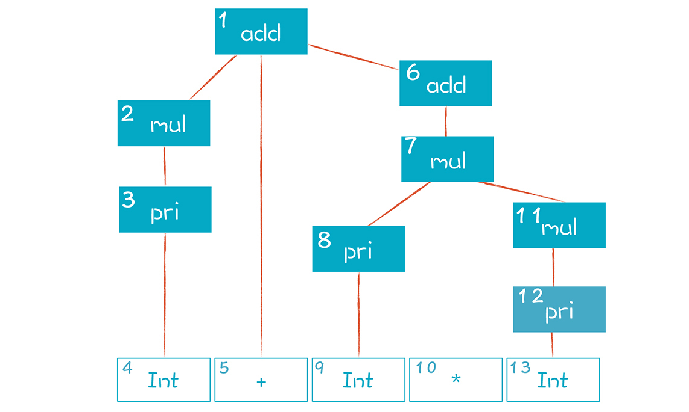

- 00 开篇词 为什么你要学习编译原理？.md.html
- 01 理解代码：编译器的前端技术.md.html
- 02 正则文法和有限自动机：纯手工打造词法分析器.md.html
- 03 语法分析（一）：纯手工打造公式计算器.md.html
- 04 语法分析（二）：解决二元表达式中的难点.md.html
- 05 语法分析（三）：实现一门简单的脚本语言.md.html
- 06 编译器前端工具（一）：用Antlr生成词法、语法分析器.md.html
- 07 编译器前端工具（二）：用Antlr重构脚本语言.md.html
- 08 作用域和生存期：实现块作用域和函数.md.html
- 09 面向对象：实现数据和方法的封装.md.html
- 10 闭包： 理解了原理，它就不反直觉了.md.html
- 11 语义分析（上）：如何建立一个完善的类型系统？.md.html
- 12 语义分析（下）：如何做上下文相关情况的处理？.md.html
- 13 继承和多态：面向对象运行期的动态特性.md.html
- 14 前端技术应用（一）：如何透明地支持数据库分库分表？.md.html
- 15 前端技术应用（二）：如何设计一个报表工具？.md.html
- 16 NFA和DFA：如何自己实现一个正则表达式工具？.md.html
- 17 First和Follow集合：用LL算法推演一个实例.md.html
- 18 移进和规约：用LR算法推演一个实例.md.html
- 19 案例总结与热点问题答疑：对于左递归的语法，为什么我的推导不是左递归的？.md.html
- 20 高效运行：编译器的后端技术.md.html
- 21 运行时机制：突破现象看本质，透过语法看运行时.md.html
- 22 生成汇编代码（一）：汇编语言其实不难学.md.html
- 23 生成汇编代码（二）：把脚本编译成可执行文件.md.html
- 24 中间代码：兼容不同的语言和硬件.md.html
- 25 后端技术的重用：LLVM不仅仅让你高效.md.html
- 26 生成IR：实现静态编译的语言.md.html
- 27 代码优化：为什么你的代码比他的更高效？.md.html
- 28 数据流分析：你写的程序，它更懂.md.html
- 29 目标代码的生成和优化（一）：如何适应各种硬件架构？.md.html
- 30 目标代码的生成和优化（二）：如何适应各种硬件架构？.md.html
- 31 内存计算：对海量数据做计算，到底可以有多快？.md.html
- 32 字节码生成：为什么Spring技术很强大？.md.html
- 33 垃圾收集：能否不停下整个世界？.md.html
- 34 运行时优化：即时编译的原理和作用.md.html
- 35 案例总结与热点问题答疑：后端部分真的比前端部分难吗？.md.html
- 36 当前技术的发展趋势以及其对编译技术的影响.md.html
- 37 云编程：云计算会如何改变编程模式？.md.html
- 38 元编程：一边写程序，一边写语言.md.html
- 加餐 汇编代码编程与栈帧管理.md.html
- 用户故事 因为热爱，所以坚持.md.html
- 第二季回归 这次，我们一起实战解析真实世界的编译器.md.html
- 结束语 用程序语言，推动这个世界的演化.md.html
- 捐赠
17 First和Follow集合：用LL算法推演一个实例
在前面的课程中，我讲了递归下降算法。这个算法很常用，但会有回溯的现象，在性能上会有损失。所以我们要把算法升级一下，实现带有预测能力的自顶向下分析算法，避免回溯。而要做到这一点，就需要对自顶向下算法有更全面的了解。
另外，在留言区，有几个同学问到了一些问题，涉及到对一些基本知识点的理解，比如：
- 基于某个语法规则做解析的时候，什么情况下算是成功，什么情况下算是失败？
- 使用深度优先的递归下降算法时，会跟广度优先的思路搞混。
要搞清这些问题，也需要全面了解自顶向下算法。比如，了解Follow集合和$符号的用法，能帮你解决第一个问题；了解广度优先算法能帮你解决第二个问题。
所以，本节课，我先把自顶向下分析的算法体系梳理一下，让你先建立更加清晰的全景图，然后我再深入剖析LL算法的原理，讲清楚First集合与Follow集合这对核心概念，最终让你把自顶向下的算法体系吃透。
自顶向下分析算法概述
自顶向下分析的算法是一大类算法。总体来说，它是从一个非终结符出发，逐步推导出跟被解析的程序相同的Token串。
这个过程可以看做是一张图的搜索过程，这张图非常大，因为针对每一次推导，都可能产生一个新节点。下面这张图只是它的一个小角落。

算法的任务，就是在大图中，找到一条路径，能产生某个句子（Token串）。比如，我们找到了三条橘色的路径，都能产生“2+3*5”这个表达式。
根据搜索的策略，有深度优先（Depth First）和广度优先（Breadth First）两种，这两种策略的推导过程是不同的。
深度优先是沿着一条分支把所有可能性探索完。以“add->mul+add”产生式为例，它会先把mul这个非终结符展开，比如替换成pri，然后再把它的第一个非终结符pri展开。只有把这条分支都向下展开之后，才会回到上一级节点，去展开它的兄弟节点。
递归下降算法就是深度优先的，这也是它不能处理左递归的原因，因为左边的分支永远也不能展开完毕。
而针对“add->add+mul”这个产生式，广度优先会把add和mul这两个都先展开，这样就形成了四条搜索路径，分别是mul+mul、add+mul+mul、add+pri和add+mul*pri。接着，把它们的每个非终结符再一次展开，会形成18条新的搜索路径。
所以，广度优先遍历，需要探索的路径数量会迅速爆炸，成指数级上升。哪怕用下面这个最简单的语法，去匹配“2+3”表达式，都需要尝试20多次，更别提针对更复杂的表达式或者采用更加复杂的语法规则了。
//一个很简单的语法
add -> pri //1
add -> add + pri //2
pri -> Int //3
pri -> (add) //4
这样看来，指数级上升的内存消耗和计算量，使得广度优先根本没有实用价值。虽然上面的算法有优化空间，但无法从根本上降低算法复杂度。当然了，它也有可以使用左递归文法的优点，不过我们不会为了这个优点去忍受算法的性能。
而深度优先算法在内存占用上是线性增长的。考虑到回溯的情况，在最坏的情况下，它的计算量也会指数式增长，但我们可以通过优化，让复杂度降为线性增长。
了解广度优先算法，你的思路会得到拓展，对自顶向下算法的本质有更全面的理解。另外，在写算法时，你也不会一会儿用深度优先，一会儿用广度优先了。
针对深度优先算法的优化方向是减少甚至避免回溯，思路就是给算法加上预测能力。比如，我在解析statement的时候，看到一个if，就知道肯定这是一个条件语句，不用再去尝试其他产生式了。
LL算法就属于这类预测性的算法。第一个L，是Left-to-right，代表从左向右处理程序代码。第二个L，是Leftmost，意思是最左推导。
按照语法规则，一个非终结符展开后，会形成多个子节点，其中包含终结符和非终结符。最左推导是指，从左到右依次推导展开这些非终结符。采用Leftmost的方法，在推导过程中，句子的左边逐步都会被替换成终结符，只有右边的才可能包含非终结符。
以“2+3*5”为例，它的推导顺序从左到右，非终结符逐步替换成了终结符：

下图是上述推导过程建立起来的AST，“1、2、3……”等编号是AST节点创建的顺序：

好了，我们把自顶向下分析算法做了总体概述，并讲清楚了最左推导的含义，现在来看看LL算法到底是怎么回事。
计算和使用First集合
LL算法是带有预测能力的自顶向下算法。在推导的时候，我们希望当存在多个候选的产生式时，瞄一眼下一个（或多个）Token，就知道采用哪个产生式。如果只需要预看一个Token，就是LL(1)算法。
拿statement的语法举例子，它有好几个产生式，分别产生if语句、while语句、switch语句……
statement
: block
| IF parExpression statement (ELSE statement)?
| FOR '(' forControl ')' statement
| WHILE parExpression statement
| DO statement WHILE parExpression ';'
| SWITCH parExpression '{' switchBlockStatementGroup* switchLabel*
| RETURN expression? ';'
| BREAK IDENTIFIER? ';'
| CONTINUE IDENTIFIER? ';'
| SEMI
| statementExpression=expression ';'
| identifierLabel=IDENTIFIER ':' statement
;
如果我看到下一个Token是if，那么后面跟着的肯定是if语句，这样就实现了预测，不需要一个一个产生式去试。
问题来了，if语句的产生式的第一个元素就是一个终结符，这自然很好判断，可如果是一个非终结符，比如表达式语句，那该怎么判断呢？
我们可以为statement的每条分支计算一个集合，集合包含了这条分支所有可能的起始Token。如果每条分支的起始Token是不一样的，也就是这些集合的交集是空集，那么就很容易根据这个集合来判断该选择哪个产生式。我们把这样的集合，就叫做这个产生式的First集合。
First集合的计算很直观，假设我们要计算的产生式是x：
- 如果x以Token开头，那么First(x)包含的元素就是这个Token，比如if语句的First集合就是{IF}。
- 如果x的开头是非终结符a，那么First(x)要包含First(a)的所有成员。比如expressionStatment是以expression开头，因此它的First集合要包含First(expression)的全体成员。
- 如果x的第一个元素a能够产生ε，那么还要再往下看一个元素b，把First(b)的成员也加入到First(x)，以此类推。如果所有元素都可能返回ε，那么First(x)也应该包含ε，意思是x也可能产生ε。比如下面的blockStatements产生式，它的第一个元素是blockStatement*，也就意味着blockStatement的数量可能为0，因此可能产生ε。那么First(blockStatements)除了要包含First(blockStatement)的全部成员，还要包含后面的“；”。
blockStatements
: blockStatement*
;
- 最后，如果x是一个非终结符，它有多个产生式可供选择，那么First(x)应包含所有产生式的First()集合的成员。比如statement的First集合要包含if、while等所有产生式的First集合的成员。并且，如果这些产生式只要有一个可能产生ε，那么x就可能产生ε，因此First(x)就应该包含ε。
在本讲的示例程序里，我们可以用SampleGrammar.expressionGrammar()方法获得一个表达式的语法，把它dump()一下，这其实是消除了左递归的表达式语法：
expression : assign ;
assign : equal | assign1 ;
assign1 : '=' equal assign1 | ε;
equal : rel equal1 ;
equal1 : ('==' | '!=') rel equal1 | ε ;
rel : add rel1 ;
rel1 : ('>=' | '>' | '<=' | '<') add rel1 | ε ;
add : mul add1 ;
add1 : ('+' | '-') mul add1 | ε ;
mul : pri mul1 ;
mul1 : ('*' | '/') pri mul1 | ε ;
pri : ID | INT_LITERAL | LPAREN expression RPAREN ;
我们用GrammarNode类代表语法的节点，形成一张语法图（蓝色节点的下属节点之间是“或”的关系，也就是语法中的竖线）。
基于这个数据结构能计算每个非终结符的First集合，可以参考LLParser类的caclFirstSets()方法。运行示例程序可以打印出表达式语法中各个非终结符的First集合。
在计算时你要注意，因为上下文无关文法是允许递归嵌套的，所以这些GrammarNode节点构成的是一个图，而不是树，不能通过简单的遍历树的方法来计算First集合。比如，pri节点是expression的后代节点，但pri又引用了expression（pri->(expression)）。这样，计算First(expression)需要用到First(pri)，而计算First(pri)又需要依赖First(expression)。
破解这个僵局的方法是用“不动点法”来计算。多次遍历图中的节点，看看每次有没有计算出新的集合成员。比如，第一遍计算的时候，当求First(pri)的时候，它所依赖的First(expression)中的成员可能不全，等下一轮继续计算时，发现有新的集合成员，再加进来就好了，直到所有集合的成员都没有变动为止。
现在我们可以用First集合进行分支判断了，不过还要处理产生式可能为ε的情况，比如“+mul add1 | ε”或“blockStatement*”都会产生ε。
计算和使用Follow集合
对ε的处理分成两种情况。
第一种情况，是产生式中的部分元素会产生ε。比如，在Java语法里，声明一个类成员的时候，可能会用public、private这些来修饰，但也可以省略不写。在语法规则中，这个部分是“accessModifier?”，它就可能产生ε。
memberDeclaration : accessModifier? type identifier ';' ;
accessModifier : 'public' | 'private' ;
type : 'int' | 'long' | 'double' ;
所以，当我们遇到下面这两个语句的时候，都可以判断为类成员的声明：
public int a;
int b;
这时，type能够产生的终结符 ‘int’、‘long’和‘double’也在memberDeclaration的First集合中。这样，我们实际上把accessModifier给穿透了，直接到了下一个非终结符type。所以这类问题依靠First集合仍然能解决。在解析的过程中，如果下一个Token是 ‘int’，我们可以认为accessModifier返回了ε，忽略它，继续解析下一个元素type，因为它的First集合中才会包含 ‘int’。
第二种情况是产生式本身（而不是其组成部分）产生ε。这类问题仅仅依靠First集合是无法解决的，要引入另一个集合：Follow集合。它是所有可能跟在某个非终结符之后的终结符的集合。
以block语句为例，在PlayScript.g4中，大致是这样定义的：
block
: '{' blockStatements '}'
;
blockStatements
: blockStatement*
;
blockStatement
: variableDeclarators ';'
| statement
| functionDeclaration
| classDeclaration
;
也就是说，block是由blockStatements构成的，而blockStatements可以由0到n个blockStatement构成，因此可能产生ε。
接下来，我们来看看解析block时会发生什么。
假设花括号中一个语句也没有，也就是blockStatments实际上产生了ε。那么在解析block时，首先读取了一个Token，即“{”，然后处理blockStatements，我们再预读一个Token，发现是“}”，那这个右花括号是blockStatement的哪个产生式的呢？实际上它不在任何一个产生式的First集合中，下面是进行判断的伪代码：
nextToken = tokens.peek(); //得到'}'
nextToken in First(variableDeclarators) ? //no
nextToken in First(statement) ? //no
nextToken in First(functionDeclaration) ? //no
nextToken in First(classDeclaration) ? //no
我们找不到任何一个可用的产生式。这可怎么办呢？除了可能是blockStatments本身产生了ε之外，还有一个可能性就是出现语法错误了。而要继续往下判断，就需要用到Follow集合。
像blockStatements的Follow集合只有一个元素，就是右花括号“}”。所以，我们只要再检查一下nextToken是不是花括号就行了：
//伪代码
nextToken = tokens.peek(); //得到'}'
nextToken in First(variableDeclarators) ? //no
nextToken in First(statement) ? //no
nextToken in First(functionDeclaration) ? //no
nextToken in First(classDeclaration) ? //no
if (nextToken in Follow(blockStatements)) //检查Follow集合
return Epsilon; //推导出ε
else
error; //语法错误
那么怎么计算非终结符x的Follow集合呢？
- 扫描语法规则，看看x后面都可能跟哪些符号。
- 对于后面跟着的终结符，都加到Follow(x)集合中去。
- 如果后面是非终结符，就把它的First集合加到自己的Follow集合中去。
- 最后，如果后面的非终结符可能产出ε，就再往后找，直到找到程序终结符号。
这个符号通常记做$，意味一个程序的结束。比如在表达式的语法里，expression 后面可能跟这个符号，expression 的所有右侧分支的后代节点也都可能跟这个符号，也就是它们都可能出现在程序的末尾。但另一些非终结符，后面不会跟这个符号，如blockstatements，因为它后面肯定会有“}”。
你可以参考LLParser类的caclFollowSets()方法，这里也要用到不动点法做计算。运行程序可以打印出示例语法的的Follow集合。我把程序打印输出的First和follow集合整理如下（其实打印输出还包含一些中间节点，这里就不展示了）：
在表达式的解析中，我们会综合运用First和Follow集合。比如，对于“add1 -> + mul add1 | ε”，如果预读的下一个Token是+，那就按照第一个产生式处理，因为+在First(“+ mul add1”)集合中。如果预读的Token是>号，那它肯定不在First(add1)中，而我们要看它是否属于Follow(add1)，如果是，那么add1就产生一个ε，否则就报错。
LL算法和文法
现在我们已经建立了对First集合、Follow集合和LL算法计算过程的直觉认知。这样再写出算法的实现，就比较容易了。用LL算法解析语法的时候，我们可以选择两种实现方式。
第一种，还是采用递归下降算法，只不过现在的递归下降算法是没有任何回溯的。无论走到哪一步，我们都能准确地预测出应该采用哪个产生式。
第二种，是采用表驱动的方式。这个时候需要基于我们计算出来的First和Follow集合构造一张预测分析表。根据这个表，查找在遇到什么Token的情况下，应该走哪条路径。
这两种方式是等价的，你可以根据自己的喜好来选择，我用的是第一种。关于算法，我们就说这么多，接下来，我们谈谈如何设计符合LL(k)特别是LL(1)算法的文法。
我们已经知道左递归的文法是要避免的，也知道要如何避免。除此之外，我们要尽量抽取左公因子，这样可以避免First集合产生交集。举例来说，变量声明和函数声明的规则在前半截都差不多，都是类型后面跟着标识符：
statement : variableDeclare | functionDeclare | other;
variableDeclare : type Identifier ('=' expression)? ;
funcationDeclare : type Identifier '(' parameterList ')' block ;
具体例子如下：
int age；
int cacl(int a, int b){
return a + b;
}
这样的语法规则，如果按照LL(1)算法，First(variableDeclare)和First(funcationDeclare)是相同的，没法决定走哪条路径。你就算用LL(2)，也是一样的，要用到LL(3)才行。但对于LL(k) k > 1来说，程序开销有点儿大，因为要计算更多的集合，构造更复杂的预测分析表。
不过这个问题很容易解决，只要把它们的左公因子提出来就可以了：
statement: declarator | other;
declarator : declarePrefix （variableDeclarePostfix
|functionDeclarePostfix) ;
variableDeclarePostfix : ('=' expression)? ;
functionDeclarePostfix : '(' parameterList ')' block ;
这样，解析程序先解析它们的公共部分，即declarePrefix，然后再看后面的差异。这时，它俩的First集合，一个{ = ; }，一个是{ ( }，两者没有交集，能够很容易区分。
课程小结
本节课我们比较全面地梳理了自顶向下算法。语法解析过程可以看做是对图的遍历过程，遍历时可以采取深度优先或广度优先的策略，这里要注意，你可能在做深度优先遍历的时候，误用广度优先的思路。
针对LL算法，我们通过实例分析了First集合和Follow集合的使用场景和计算方式。掌握了这两个核心概念，特别是熟悉它们的使用场景，你会彻底掌握LL算法。
一课一思
处理ε是LL算法中的关键点。在你熟悉的语言中，哪些语法会产生ε，你在做语法解析的时候会怎样处理它们？欢迎在留言区分享你的思考。
最后，感谢你的阅读，如果这篇文章让你有所收获，也欢迎你将它分享给更多的朋友。
本节课的示例代码我放在了文末，供你参考。
© 2019 - 2023 Liangliang Lee. Powered by gin and hexo-theme-book.